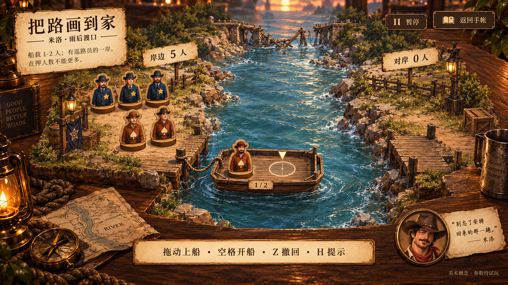

<!doctype html><html lang="zh"><meta charset="utf-8"><title>米洛 · 声画交互说明</title><style>@font-face{font-family:ConceptFont;src:url(file:///Users/wit/Documents/GitHub/guests-yet-to-return/assets/fonts/NotoSerifSC.ttf)}*{box-sizing:border-box}body{margin:0;background:#30271e;color:#49392c;font-family:ConceptFont,serif}.sheet{width:1800px;height:1400px;padding:52px 64px;background:radial-gradient(ellipse at top left,#fff5dc,#ebdfc3 72%);position:relative}.header{height:235px;display:flex;justify-content:space-between;gap:35px}.eyebrow{font:20px Arial,sans-serif;letter-spacing:4px;color:#8e703f;margin:8px 0 17px}h1{font-size:46px;margin:0 0 17px;font-weight:600}p{font-size:25px;margin:0;line-height:1.7}.sub{color:#846b4a;font-size:21px}.thumb{width:360px;height:203px;object-fit:contain;border:6px solid #f8efd8;box-shadow:0 6px 16px #614c372d;transform:rotate(1deg)}.grid{display:grid;grid-template-columns:1fr 1fr;gap:24px}.panel{height:466px;padding:25px 25px 21px;background:#fff9e9;border:1px solid #c8b690;border-radius:16px;box-shadow:0 5px 12px #7b66431a;overflow:hidden}.panelhead{display:flex;align-items:center;gap:16px;margin-bottom:12px}.number{display:grid;place-items:center;width:46px;height:46px;flex-shrink:0;background:#685039;color:#ffeccc;font:22px Arial;border-radius:50%}.panel h2{font-size:28px;margin:0;font-weight:600}.timing{margin-left:auto;font-size:17px;color:#7b6246}.diagram{height:220px;margin-bottom:10px;border-radius:10px;background:#f2ead6}.diagram svg{width:100%;height:100%}.description{font-size:21px;line-height:1.75;white-space:nowrap}.sound{display:flex;align-items:center;gap:15px;margin-top:12px}.sound em{font-style:normal;font-size:19px;letter-spacing:2px;padding:6px 15px;border-radius:30px;background:#e7d8b7;color:#775530}.waves{display:flex;align-items:center;gap:4px;height:22px}.waves span{width:3px;background:#b19661;border-radius:2px}.footer{font-size:20px;color:#846d4d;display:flex;justify-content:space-between;margin-top:29px;border-top:1px solid #c7b592;padding-top:18px}.footer b{font-weight:400;color:#5c4831}</style><main class="sheet"><header class="header"><div><div class="eyebrow">GUESTS YET TO RETURN / INTERACTION STUDY 0.2</div><h1>米洛｜交互、特效与音效</h1><p>木、水、绳索，让每一趟渡河有重量</p><p class="sub">动作示意图 · 配合右侧美术预览阅读 · 所有参数均为建议</p></div></header><div class="grid"><section class="panel"><div class="panelhead"><span class="number">01</span><h2>拿起木偶</h2><span class="timing">当帧跟手</span></div><div class="diagram"><svg xmlns="http://www.w3.org/2000/svg" viewBox="0 0 790 210" style="font-family:ConceptFont,serif"><defs><linearGradient id="wood" x2="0" y2="1"><stop stop-color="#c19a62"/><stop offset=".5" stop-color="#8f653e"/><stop offset="1" stop-color="#a77f4d"/></linearGradient><radialGradient id="glow"><stop stop-color="#f8cc66" stop-opacity=".65"/><stop offset="1" stop-color="#f8cc66" stop-opacity="0"/></radialGradient><linearGradient id="light"><stop stop-color="#edd796" stop-opacity=".15"/><stop offset="1" stop-color="#edd796" stop-opacity=".6"/></linearGradient><marker id="arrow" viewBox="0 0 10 10" refX="8" refY="5" markerWidth="4" markerHeight="4" orient="auto-start-reverse"><path d="M0 0L10 5L0 10Z" fill="#b08945"/></marker></defs><g opacity="0.2" transform="translate(172,97)"><ellipse cy="72" rx="35" ry="11" fill="#3f3426" opacity=".18"/><ellipse cy="61" rx="33" ry="10" fill="#926239"/><path d="M-33 50V61Q0 78 33 61V50" fill="url(#wood)" stroke="#785637" stroke-width="2"/><ellipse cy="50" rx="33" ry="10" fill="#c9a570"/><path d="M-23 44V3Q0-11 23 3V44Z" fill="#b3754e" stroke="#71543b" stroke-width="2"/><circle cy="-14" r="17" fill="#dbb082"/><path d="M-32-22H32M-18-25V-38H18V-25" stroke="#66472f" stroke-width="9" stroke-linejoin="round"/><text x="-10" y="29" font-size="25" fill="#ffe7b7">工</text></g><g opacity="1" transform="translate(172,44)"><ellipse cy="72" rx="35" ry="11" fill="#3f3426" opacity=".18"/><ellipse cy="61" rx="33" ry="10" fill="#926239"/><path d="M-33 50V61Q0 78 33 61V50" fill="url(#wood)" stroke="#785637" stroke-width="2"/><ellipse cy="50" rx="33" ry="10" fill="#c9a570"/><path d="M-23 44V3Q0-11 23 3V44Z" fill="#b3754e" stroke="#71543b" stroke-width="2"/><circle cy="-14" r="17" fill="#dbb082"/><path d="M-32-22H32M-18-25V-38H18V-25" stroke="#66472f" stroke-width="9" stroke-linejoin="round"/><text x="-10" y="29" font-size="25" fill="#ffe7b7">工</text></g><path d="M235 130L235 54" stroke="#b08945" stroke-width="4" stroke-linecap="round" marker-end="url(#arrow)"/><text x="299" y="78" font-size="23" fill="#533e2c">物体紧跟指针，影子留在桌面</text><text x="299" y="121" font-size="21" fill="#533e2c">拿起高度可见，不人为延迟鼠标</text><text x="299" y="164" font-size="21" fill="#533e2c">落点预览只出现在可用船位</text></svg></div><div class="description">画面：底座离桌，影子软化。<br>声音：干木轻碰；拖着不反复播放。</div><div class="sound"><em>嗒</em><div class="waves"><span style="height:4px"></span><span style="height:8px"></span><span style="height:17px"></span><span style="height:10px"></span><span style="height:22px"></span><span style="height:12px"></span><span style="height:7px"></span><span style="height:13px"></span><span style="height:5px"></span></div></div></section><section class="panel"><div class="panelhead"><span class="number">02</span><h2>松手上船</h2><span class="timing">收尾约 0.2 秒</span></div><div class="diagram"><svg xmlns="http://www.w3.org/2000/svg" viewBox="0 0 790 210" style="font-family:ConceptFont,serif"><defs><linearGradient id="wood" x2="0" y2="1"><stop stop-color="#c19a62"/><stop offset=".5" stop-color="#8f653e"/><stop offset="1" stop-color="#a77f4d"/></linearGradient><radialGradient id="glow"><stop stop-color="#f8cc66" stop-opacity=".65"/><stop offset="1" stop-color="#f8cc66" stop-opacity="0"/></radialGradient><linearGradient id="light"><stop stop-color="#edd796" stop-opacity=".15"/><stop offset="1" stop-color="#edd796" stop-opacity=".6"/></linearGradient><marker id="arrow" viewBox="0 0 10 10" refX="8" refY="5" markerWidth="4" markerHeight="4" orient="auto-start-reverse"><path d="M0 0L10 5L0 10Z" fill="#b08945"/></marker></defs><rect x="18" y="107" width="754" height="93" rx="20" fill="#799da0" opacity=".3"/><path d="M35 145q45-18 85 0t85 0t85 0t85 0t85 0t85 0t85 0t85 0" fill="none" stroke="#91b2af" stroke-width="3"/><g transform="rotate(-4 171 137)"><g opacity="1" transform="translate(70,108) scale(0.85)"><ellipse cx="108" cy="85" rx="128" ry="26" fill="#365b62" opacity=".17"/><path d="M-13 12Q107-9 229 12L207 81Q108 107 8 81Z" fill="url(#wood)" stroke="#755435" stroke-width="4"/><path d="M4 18H213L200 65H16Z" fill="#b38956" stroke="#e4c692" stroke-width="3"/><path d="M14 31H209M19 43H204M20 55H201" stroke="#795b3b" stroke-width="2"/><ellipse cx="65" cy="44" rx="31" ry="15" fill="none" stroke="#f9e5b9" stroke-width="3"/><ellipse cx="157" cy="44" rx="31" ry="15" fill="none" stroke="#f9e5b9" stroke-width="3"/><g opacity="1" transform="translate(65,-20)"><ellipse cy="72" rx="35" ry="11" fill="#3f3426" opacity=".18"/><ellipse cy="61" rx="33" ry="10" fill="#926239"/><path d="M-33 50V61Q0 78 33 61V50" fill="url(#wood)" stroke="#785637" stroke-width="2"/><ellipse cy="50" rx="33" ry="10" fill="#c9a570"/><path d="M-23 44V3Q0-11 23 3V44Z" fill="#b3754e" stroke="#71543b" stroke-width="2"/><circle cy="-14" r="17" fill="#dbb082"/><path d="M-32-22H32M-18-25V-38H18V-25" stroke="#66472f" stroke-width="9" stroke-linejoin="round"/><text x="-10" y="29" font-size="25" fill="#ffe7b7">工</text></g></g></g><ellipse cx="171" cy="181" rx="132" ry="19" fill="none" stroke="#6b949a" stroke-width="3"/><text x="384" y="65" font-size="23" fill="#533e2c">① 木偶落座</text><text x="384" y="107" font-size="23" fill="#533e2c">② 船向受力侧轻沉</text><text x="384" y="149" font-size="23" fill="#533e2c">③ 水纹散开，船身回稳</text><path d="M297 84L316 135" stroke="#b08945" stroke-width="4" stroke-linecap="round" marker-end="url(#arrow)"/></svg></div><div class="description">画面：吸附落位、船身轻沉、小水纹。<br>声音：木底落船＋轻水声，成功落位才响。</div><div class="sound"><em>咚 · 哗</em><div class="waves"><span style="height:4px"></span><span style="height:8px"></span><span style="height:17px"></span><span style="height:10px"></span><span style="height:22px"></span><span style="height:12px"></span><span style="height:7px"></span><span style="height:13px"></span><span style="height:5px"></span></div></div></section><section class="panel"><div class="panelhead"><span class="number">03</span><h2>空格渡河</h2><span class="timing">航行约 0.8 秒</span></div><div class="diagram"><svg xmlns="http://www.w3.org/2000/svg" viewBox="0 0 790 210" style="font-family:ConceptFont,serif"><defs><linearGradient id="wood" x2="0" y2="1"><stop stop-color="#c19a62"/><stop offset=".5" stop-color="#8f653e"/><stop offset="1" stop-color="#a77f4d"/></linearGradient><radialGradient id="glow"><stop stop-color="#f8cc66" stop-opacity=".65"/><stop offset="1" stop-color="#f8cc66" stop-opacity="0"/></radialGradient><linearGradient id="light"><stop stop-color="#edd796" stop-opacity=".15"/><stop offset="1" stop-color="#edd796" stop-opacity=".6"/></linearGradient><marker id="arrow" viewBox="0 0 10 10" refX="8" refY="5" markerWidth="4" markerHeight="4" orient="auto-start-reverse"><path d="M0 0L10 5L0 10Z" fill="#b08945"/></marker></defs><rect x="18" y="107" width="754" height="93" rx="20" fill="#799da0" opacity=".3"/><path d="M35 145q45-18 85 0t85 0t85 0t85 0t85 0t85 0t85 0t85 0" fill="none" stroke="#91b2af" stroke-width="3"/><g opacity="0.25" transform="translate(42,102) scale(0.67)"><ellipse cx="108" cy="85" rx="128" ry="26" fill="#365b62" opacity=".17"/><path d="M-13 12Q107-9 229 12L207 81Q108 107 8 81Z" fill="url(#wood)" stroke="#755435" stroke-width="4"/><path d="M4 18H213L200 65H16Z" fill="#b38956" stroke="#e4c692" stroke-width="3"/><path d="M14 31H209M19 43H204M20 55H201" stroke="#795b3b" stroke-width="2"/><ellipse cx="65" cy="44" rx="31" ry="15" fill="none" stroke="#f9e5b9" stroke-width="3"/><ellipse cx="157" cy="44" rx="31" ry="15" fill="none" stroke="#f9e5b9" stroke-width="3"/><g opacity="1" transform="translate(65,-20)"><ellipse cy="72" rx="35" ry="11" fill="#3f3426" opacity=".18"/><ellipse cy="61" rx="33" ry="10" fill="#926239"/><path d="M-33 50V61Q0 78 33 61V50" fill="url(#wood)" stroke="#785637" stroke-width="2"/><ellipse cy="50" rx="33" ry="10" fill="#c9a570"/><path d="M-23 44V3Q0-11 23 3V44Z" fill="#b3754e" stroke="#71543b" stroke-width="2"/><circle cy="-14" r="17" fill="#dbb082"/><path d="M-32-22H32M-18-25V-38H18V-25" stroke="#66472f" stroke-width="9" stroke-linejoin="round"/><text x="-10" y="29" font-size="25" fill="#ffe7b7">工</text></g></g><g opacity="0.55" transform="translate(282,99) scale(0.67)"><ellipse cx="108" cy="85" rx="128" ry="26" fill="#365b62" opacity=".17"/><path d="M-13 12Q107-9 229 12L207 81Q108 107 8 81Z" fill="url(#wood)" stroke="#755435" stroke-width="4"/><path d="M4 18H213L200 65H16Z" fill="#b38956" stroke="#e4c692" stroke-width="3"/><path d="M14 31H209M19 43H204M20 55H201" stroke="#795b3b" stroke-width="2"/><ellipse cx="65" cy="44" rx="31" ry="15" fill="none" stroke="#f9e5b9" stroke-width="3"/><ellipse cx="157" cy="44" rx="31" ry="15" fill="none" stroke="#f9e5b9" stroke-width="3"/><g opacity="1" transform="translate(65,-20)"><ellipse cy="72" rx="35" ry="11" fill="#3f3426" opacity=".18"/><ellipse cy="61" rx="33" ry="10" fill="#926239"/><path d="M-33 50V61Q0 78 33 61V50" fill="url(#wood)" stroke="#785637" stroke-width="2"/><ellipse cy="50" rx="33" ry="10" fill="#c9a570"/><path d="M-23 44V3Q0-11 23 3V44Z" fill="#b3754e" stroke="#71543b" stroke-width="2"/><circle cy="-14" r="17" fill="#dbb082"/><path d="M-32-22H32M-18-25V-38H18V-25" stroke="#66472f" stroke-width="9" stroke-linejoin="round"/><text x="-10" y="29" font-size="25" fill="#ffe7b7">工</text></g></g><g opacity="1" transform="translate(572,101) scale(0.67)"><ellipse cx="108" cy="85" rx="128" ry="26" fill="#365b62" opacity=".17"/><path d="M-13 12Q107-9 229 12L207 81Q108 107 8 81Z" fill="url(#wood)" stroke="#755435" stroke-width="4"/><path d="M4 18H213L200 65H16Z" fill="#b38956" stroke="#e4c692" stroke-width="3"/><path d="M14 31H209M19 43H204M20 55H201" stroke="#795b3b" stroke-width="2"/><ellipse cx="65" cy="44" rx="31" ry="15" fill="none" stroke="#f9e5b9" stroke-width="3"/><ellipse cx="157" cy="44" rx="31" ry="15" fill="none" stroke="#f9e5b9" stroke-width="3"/><g opacity="1" transform="translate(65,-20)"><ellipse cy="72" rx="35" ry="11" fill="#3f3426" opacity=".18"/><ellipse cy="61" rx="33" ry="10" fill="#926239"/><path d="M-33 50V61Q0 78 33 61V50" fill="url(#wood)" stroke="#785637" stroke-width="2"/><ellipse cy="50" rx="33" ry="10" fill="#c9a570"/><path d="M-23 44V3Q0-11 23 3V44Z" fill="#b3754e" stroke="#71543b" stroke-width="2"/><circle cy="-14" r="17" fill="#dbb082"/><path d="M-32-22H32M-18-25V-38H18V-25" stroke="#66472f" stroke-width="9" stroke-linejoin="round"/><text x="-10" y="29" font-size="25" fill="#ffe7b7">工</text></g></g><path d="M178 66L297 66" stroke="#b08945" stroke-width="4" stroke-linecap="round" marker-end="url(#arrow)"/><path d="M418 66L572 66" stroke="#b08945" stroke-width="4" stroke-linecap="round" marker-end="url(#arrow)"/><text x="49" y="39" font-size="22" fill="#533e2c">缓起</text><text x="308" y="39" font-size="22" fill="#533e2c">平稳渡河</text><text x="598" y="39" font-size="22" fill="#533e2c">轻靠岸</text></svg></div><div class="description">画面：有起步与刹停；尾流、绳索随后运动。<br>声音：船板、绳摩擦、水声；靠岸单独轻碰。</div><div class="sound"><em>吱—哗 · 嗒</em><div class="waves"><span style="height:4px"></span><span style="height:8px"></span><span style="height:17px"></span><span style="height:10px"></span><span style="height:22px"></span><span style="height:12px"></span><span style="height:7px"></span><span style="height:13px"></span><span style="height:5px"></span></div></div></section><section class="panel"><div class="panelhead"><span class="number">04</span><h2>暂不能开船</h2><span class="timing">提醒约 0.15 秒</span></div><div class="diagram"><svg xmlns="http://www.w3.org/2000/svg" viewBox="0 0 790 210" style="font-family:ConceptFont,serif"><defs><linearGradient id="wood" x2="0" y2="1"><stop stop-color="#c19a62"/><stop offset=".5" stop-color="#8f653e"/><stop offset="1" stop-color="#a77f4d"/></linearGradient><radialGradient id="glow"><stop stop-color="#f8cc66" stop-opacity=".65"/><stop offset="1" stop-color="#f8cc66" stop-opacity="0"/></radialGradient><linearGradient id="light"><stop stop-color="#edd796" stop-opacity=".15"/><stop offset="1" stop-color="#edd796" stop-opacity=".6"/></linearGradient><marker id="arrow" viewBox="0 0 10 10" refX="8" refY="5" markerWidth="4" markerHeight="4" orient="auto-start-reverse"><path d="M0 0L10 5L0 10Z" fill="#b08945"/></marker></defs><rect x="28" y="24" width="730" height="154" rx="14" fill="#e7d6ad" stroke="#b6925a" stroke-width="2"/><path d="M79 52L104 100H54Z" fill="#bd944e"/><text x="74" y="93" font-size="26" fill="#fff4d8">!</text><text x="135" y="76" font-size="25" fill="#533e2c">开船后此岸：2 名巡路员 / 3 名工人</text><text x="135" y="121" font-size="23" fill="#533e2c">这一岸巡路员太少，请重新安排。</text><text x="135" y="158" font-size="20" fill="#533e2c">船留在码头 · 不扣步数 · Z 撤回</text></svg></div><div class="description">画面：指出具体岸边与原因，局部轻回弹。<br>声音：一次低木音；不用警报，不整屏闪红。</div><div class="sound"><em>笃</em><div class="waves"><span style="height:4px"></span><span style="height:8px"></span><span style="height:17px"></span><span style="height:10px"></span><span style="height:22px"></span><span style="height:12px"></span><span style="height:7px"></span><span style="height:13px"></span><span style="height:5px"></span></div></div></section></div><footer class="footer"><span>先保证跟手与判断一致，再添加动画收尾。</span><b>声音为制作说明，尚未制作音频或接入游戏。</b></footer></main></html>